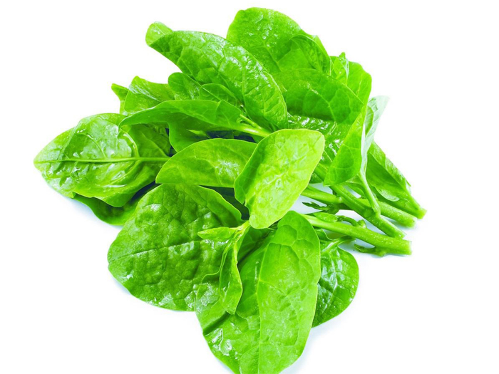

Rau Mồng Tơi
Rau mồng tơi là món ăn dân dã rất quen thuộc trong mâm cơm của gia đình Việt với các món ngon như canh mồng tơi, mồng tơi xào tỏi ... Đây không chỉ là món ăn giúp bạn tiêu hóa tốt hơn mà còn rất phong phú và nhiều dinh dưỡng.
Tác dụng của rau mồng tơi
1. Giảm cân
Rau mồng tơi có tác dụng ngăn cơ thể hấp thụ chất béo. Ngoài ra, rau chứa rất ít chất béo và calo nhưng lại giàu chất xơ. Trong 100g rau chân vịt chỉ chứa 19 calo nên đây là thực phẩm rất thích hợp cho những ai muốn giảm cân.
Bạn nên bổ sung rau xanh, đặc biệt là rau mồng tơi vào bữa ăn hàng ngày để có thể giảm cân nhanh hơn mà không ảnh hưởng xấu đến sức khỏe.
2. Hỗ trợ hệ tiêu hóa
Thân và lá chứa nhiều polysaccharide không tinh bột, chất nhầy và chất xơ. Chất nhầy trong rau mồng tơi góp phần giúp tiêu hóa tốt hơn, trơn tru hơn. Chất xơ góp phần làm giảm sự hấp thụ cholesterol cũng như ngăn ngừa các vấn đề về ruột như ngăn ngừa và điều trị táo bón.
Người tỳ vị hư hàn như ăn không tiêu, đầy bụng, lạnh bụng, đau bụng, tiêu chảy, người đau nhức xương khớp khi độ ẩm môi trường tăng cao thì không nên dùng hoặc dùng ít.
* 3. Tốt cho xương khớp
Hàm lượng canxi cao trong mồng tơi giúp xương và răng chắc khỏe, cải thiện cơ bắp, hệ thần kinh và nội tiết tố trong cơ thể. Điều này giúp phòng chống nguy cơ loãng xương. Nhu cầu canxi hàng ngày của người lớn là 1.000 - 1.200 mg.
Với một khẩu phần ăn nhỏ, loại rau này có thể bổ sung tới 55mg canxi. Chính vì vậy, rau mồng tơi được chọn là một trong những thực phẩm cần thiết cho những người muốn bổ sung canxi cho cơ thể.
4. Cải thiện thị lực
Mồng tơi là loại rau rất giàu vitamin A, với khoảng 8.000 IU trong 100g lá rau. Điều này đáp ứng tới 267% nhu cầu vitamin A hàng ngày của cơ thể. Đây là một loại vitamin cần thiết cho mắt.
Ăn mồng tơi thường xuyên sẽ giúp đôi mắt của bạn được hỗ trợ trở nên khỏe mạnh hơn. Ngoài ra, vitamin A rất tốt cho hệ thống miễn dịch, giúp tạo ra các tế bào bạch cầu để chống lại vi khuẩn và vi rút.
>